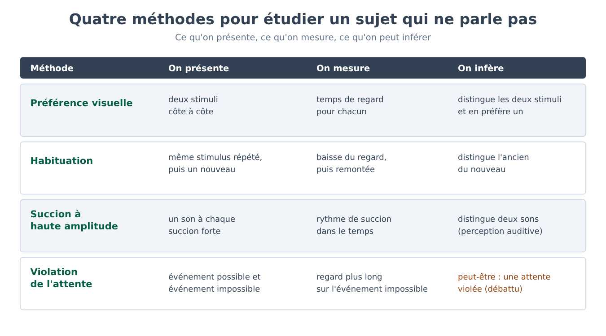
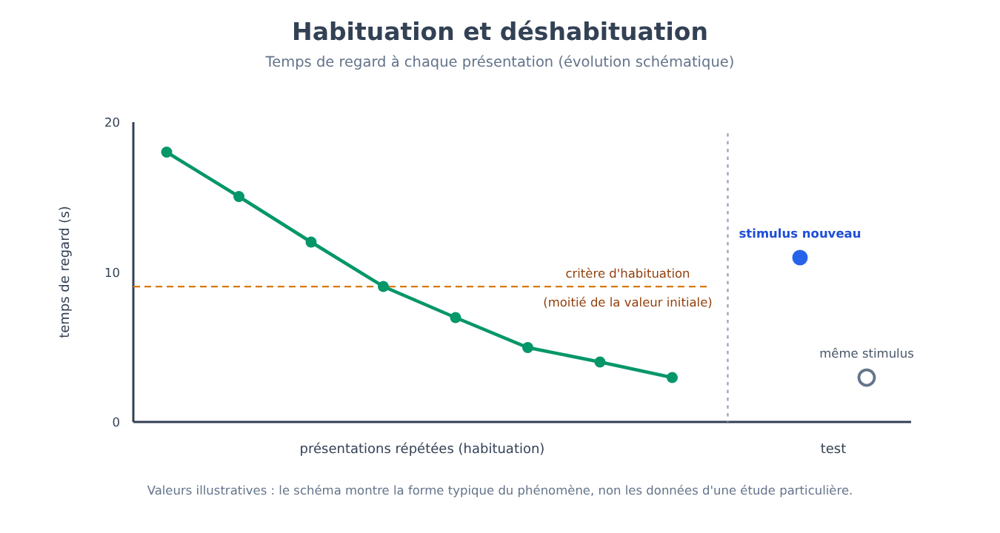
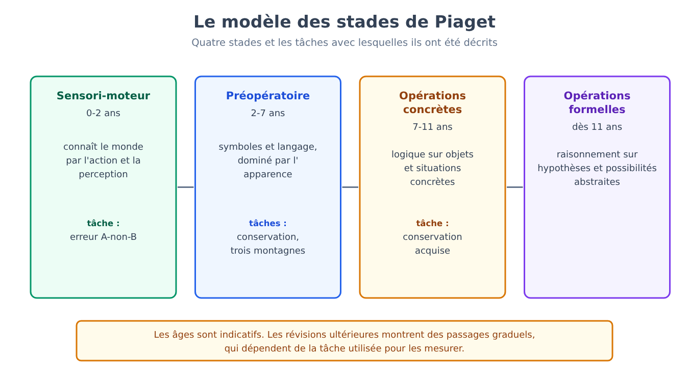
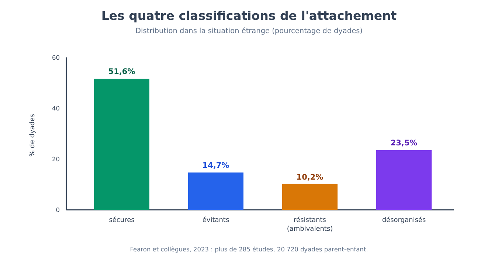
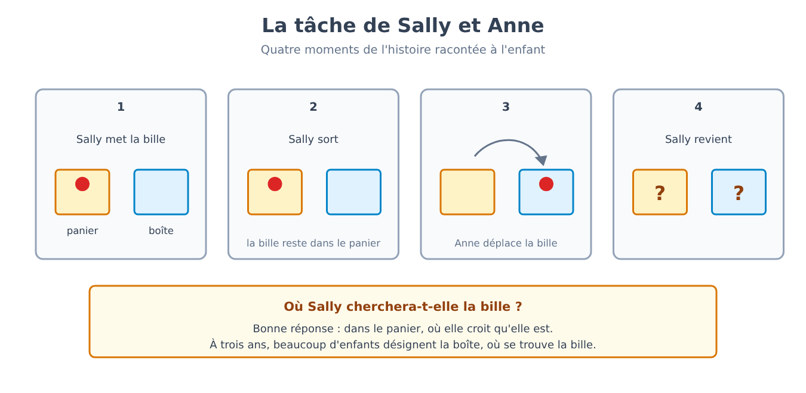
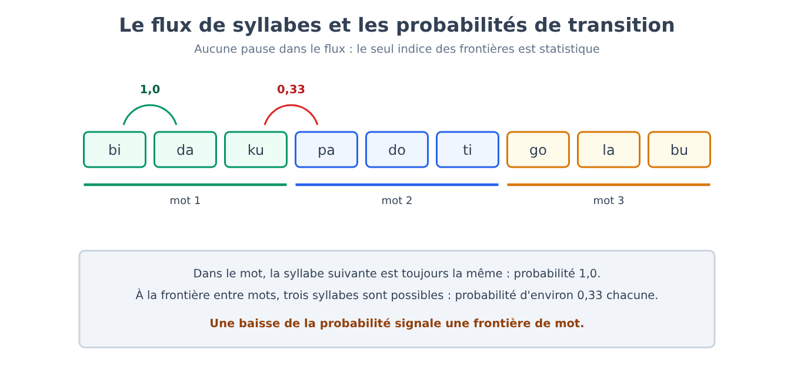
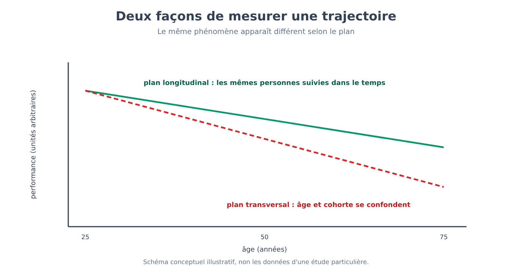

Partie IX. Développement
Chapitre 54 — Étudier un sujet qui ne parle pas
[EN DEUX MOTS]
Un nouveau-né ne répond pas à un questionnaire, n'exécute pas de consignes et n'explique pas pourquoi il fait ce qu'il fait. Pour savoir ce qu'il perçoit, distingue et attend, les chercheurs ont dû inventer des plans expérimentaux qui s'appuient sur ce que le bébé fait de lui-même : regarder, sucer, s'ennuyer, être surpris. Ce chapitre expose ces méthodes, la logique d'inférence qui les sous-tend et ses points faibles, car sans eux les six chapitres suivants seraient incompréhensibles.
Le problème : comment interroger celui qui ne peut pas répondre
Imagine que tu doives découvrir si un bébé de quatre mois distingue deux visages, deux sons ou deux quantités. Tu ne peux pas le lui demander, et si tu le pouvais tu n'obtiendrais pas de réponse fiable : même un enfant de trois ans ne sait pas expliquer ce qu'il sait. Le problème est ancien et il a une conséquence pratique précise. Pendant des décennies, les conclusions sur l'esprit du nourrisson ont été tirées de ce que les bébés étaient capables de faire avec les mains et avec la voix, et un bébé qui ne sait pas encore saisir un objet ou prononcer un mot apparaissait, par construction, dépourvu de capacités qu'il possédait peut-être déjà.
La solution a consisté à changer la question. Au lieu de demander au bébé de produire une réponse qu'il ne sait pas donner, on cherche un comportement qu'il sait déjà produire (regarder plus longtemps, sucer plus vite) et on organise l'expérience de façon que ce comportement devienne un signal. Toutes les méthodes de ce chapitre sont des variantes d'une même idée : le bébé répond avec ce qu'il a, et l'expérimentateur construit la question autour de cette réponse.
Quatre outils et ce qu'ils mesurent
La préférence visuelle (preferential looking) place devant le bébé deux stimuli côte à côte et enregistre combien de temps il regarde chacun. Si le temps moyen consacré à l'un des deux dépasse systématiquement celui consacré à l'autre, le bébé distingue les deux stimuli, et montre en outre lequel des deux il préfère. La méthode ne demande aucun apprentissage préalable, ce qui la rend utilisable dès les premiers jours de vie.
L'habituation (habituation) exploite un fait simple : devant un stimulus répété, l'attention diminue. On présente plusieurs fois le même stimulus jusqu'à ce que le temps de regard descende sous un critère fixé à l'avance (par exemple, moins de la moitié du temps initial pendant plusieurs essais consécutifs), puis on présente un stimulus nouveau. Si le regard remonte, le bébé a saisi la différence, un phénomène appelé déshabituation (dishabituation). L'avantage par rapport à la préférence visuelle est que la méthode fonctionne aussi quand le bébé n'a aucune préférence spontanée entre les deux stimuli : il suffit qu'il les distingue.
La succion à haute amplitude (high-amplitude sucking) utilise un comportement que le nouveau-né maîtrise dès la naissance. La tétine est reliée à un capteur de pression, et chaque succion suffisamment forte déclenche l'apparition d'un stimulus, le plus souvent un son. Le bébé apprend vite que sucer produit le son, et suce davantage ; puis, quand le son devient familier, le rythme diminue ; si le son change et que le bébé s'en aperçoit, le rythme remonte. C'est le même schéma que l'habituation, mais avec une réponse motrice contrôlée par le bébé, et elle convient surtout à la perception auditive.
La violation d'attente (violation of expectation) est la méthode la plus ambitieuse sur le plan conceptuel. On montre au bébé deux événements qui ne diffèrent que par un seul aspect physique, mais dont l'un est possible selon une règle du monde physique ou social (un objet solide n'en traverse pas un autre) et l'autre impossible. Si le bébé regarde plus longtemps l'événement impossible, on en infère qu'il avait une attente et que celle-ci a été violée. C'est la méthode qui a donné lieu à la plupart des résultats sur le « bébé qui sait déjà beaucoup » et aussi, comme nous le verrons, à la plupart des controverses.

Un plan d'expérience complet : la catégorie que le nouveau-né entend
[LE PLAN DE L'EXPÉRIENCE]
Dans l'étude de Peter Eimas, Einar Siqueland, Peter Jusczyk et James Vigorito (1971), des bébés d'un et de quatre mois suçaient une tétine reliée à un capteur, et chaque succion suffisamment forte produisait une syllabe synthétique. Les sons utilisés étaient construits en faisant varier par pas réguliers de 20 millisecondes un seul paramètre acoustique, le temps qui s'écoule entre le relâchement de la consonne et le début de la vibration des cordes vocales. Les adultes, en écoutant cette série, entendent « ba » pour les valeurs basses et « pa » pour les valeurs hautes, avec une frontière nette au milieu. Après la phase où le rythme de succion augmentait puis diminuait (habituation à la syllabe), on présentait à un groupe de bébés un son qui différait du précédent de 20 millisecondes en franchissant la frontière adulte entre « ba » et « pa » ; à un deuxième groupe, on présentait un son qui différait du précédent de la même quantité physique de 20 millisecondes, mais en restant à l'intérieur de la même catégorie ; un troisième groupe, de contrôle, ne changeait pas du tout. Seuls les bébés du premier groupe se remettaient à sucer plus vite de façon significative. Le résultat indique que dès un et quatre mois la perception des sons du langage est organisée en catégories, et non en un continuum physique : deux sons à distance acoustique égale ne sont traités comme différents que s'ils appartiennent à des catégories différentes.
La valeur de ce plan tient au contrôle : la différence physique est identique dans les deux conditions expérimentales, et seule la position par rapport à la frontière de catégorie change. C'est pourquoi le résultat ne peut pas être attribué à une simple sensibilité acoustique plus grande dans une zone de l'échelle. La part de l'expérience et la part d'une prédisposition dans ce phénomène seront discutées au chapitre 59.
Du temps de regard à un nombre
La donnée brute de beaucoup de ces expériences est un temps en secondes, et un temps en secondes est un nombre commode à analyser. L'indice le plus utilisé dans la préférence visuelle est la part du temps total consacrée à l'un des deux stimuli.
[FORMULE]
Pour chaque bébé, on calcule la proportion de regard vers le stimulus A :
P = T_A / (T_A + T_B)
Où :
• P est la proportion de regard vers le stimulus A, un nombre entre 0 et 1 ;
• T_A est le temps total (en secondes) pendant lequel le bébé a regardé le stimulus A ;
• T_B est le temps total (en secondes) pendant lequel il a regardé le stimulus B.
Si le bébé ne distingue pas les deux stimuli et n'a pas de préférence, on s'attend à P = 0,5. Pour savoir si le groupe de bébés préfère A, on compare la moyenne des P individuels à 0,5 avec un test t à un échantillon : t = (P̄ − 0,5) / (s / √n), où P̄ est la moyenne des proportions, s leur écart type et n le nombre de bébés.
Exemple de calcul. Un bébé regarde A pendant 14 secondes et B pendant 6 : P = 14/(14 + 6) = 0,70. Avec n = 16 bébés, une moyenne P̄ = 0,62 et un écart type s = 0,15, l'erreur standard est 0,15/√16 = 0,0375 et t = (0,62 − 0,5)/0,0375 = 3,2. Avec 15 degrés de liberté, cette valeur correspond à une probabilité d'environ 0,006 qu'une moyenne aussi éloignée de 0,5 apparaisse par hasard si les bébés regardaient indifféremment les deux stimuli. On se souviendra, comme on l'a vu au chapitre 4, que la valeur p indique à quel point la donnée serait surprenante en l'absence de toute préférence, et non à quel point la préférence elle-même est grande ou importante.

Les limites d'une méthode qui parle par les yeux
[IDÉE REÇUE]
On lit souvent que, si un bébé regarde plus longtemps un événement, cela signifie qu'il l'a compris, ou qu'il a été surpris parce qu'il connaissait la règle violée. Le temps de regard n'est une mesure directe ni de l'un ni de l'autre. Un bébé peut regarder plus longtemps parce que le stimulus est plus nouveau, plus complexe, plus voyant ou simplement plus proche du centre du champ visuel ; il peut regarder moins un événement nouveau parce qu'il l'a déjà encodé rapidement ; et dans une même expérience le sens de la préférence (nouveauté ou familiarité) dépend du temps dont le bébé a disposé pour encoder le stimulus. C'est pourquoi les plans bien construits prévoient toujours une condition de contrôle qui égalise la nouveauté perceptive entre événement possible et événement impossible, et le résultat se lit comme une différence entre conditions, jamais comme une valeur absolue.
À cela s'ajoutent des limites pratiques qui pèsent sur la solidité des résultats. Les échantillons de jeunes bébés comptent souvent quelques dizaines de sujets seulement, parce que recruter et tester un nourrisson demande du temps ; une part non négligeable des bébés testés doit être exclue de l'analyse parce qu'elle pleure, s'endort ou ne regarde pas l'écran ; et le codage du regard est souvent confié à des observateurs qui, s'ils connaissent la condition, peuvent être influencés (c'est pourquoi on recourt à des codeurs en aveugle, comme rappelé au chapitre 2).
Pour mesurer le poids de ces limites, un consortium international a monté un projet de réplication coordonnée. Dans le projet ManyBabies 1 (ManyBabies Consortium, 2020), 67 laboratoires de 16 pays ont testé 2 329 bébés, d'âge moyen autour de 9 mois (entre 3 et 15 mois), avec le même protocole de préférence pour la parole adressée aux bébés par rapport à la parole entre adultes. L'effet est apparu dans l'ensemble des données (d = 0,35, plus petit que les estimations de la littérature antérieure), avec une grande variabilité entre laboratoires : les bébés préféraient en moyenne la parole qui leur était adressée, et la préférence était plus forte chez les bébés plus âgés et quand la langue était celle parlée à la maison. Le résultat est rassurant sur la méthode, qui peut fonctionner de façon cohérente dans des laboratoires différents, mais le projet a aussi montré à quel point la taille de l'effet varie d'un laboratoire à l'autre, une variabilité que les études isolées portant sur peu de bébés ne peuvent pas détecter.
[ATTENTION AU SAUT LOGIQUE]
Entre le fait qu'un bébé distingue deux événements et la conclusion qu'il « possède le concept » que ces événements représentent, il y a au moins deux passages que les données ne couvrent pas à elles seules. Le premier va de discriminer à catégoriser (deux stimuli sont traités comme différents, mais le sont-ils pour le bébé de la manière dont ils le sont pour un adulte ?). Le second va de catégoriser à représenter avec une signification (le bébé sait-il qu'une chose tombe parce qu'elle n'a pas de support, ou a-t-il seulement enregistré que certaines images se succèdent dans un certain ordre ?). Quand les chapitres suivants parleront de ce que le bébé « sait », il faudra toujours entendre le niveau le plus bas que les données permettent de soutenir, et là où la littérature discute de ce niveau, on le dira.
[MINI-CHRONOLOGIE]
Les principaux outils sont relativement récents.
• Années 1960 — préférence visuelle systématique chez les nourrissons, avec la découverte que dès les premiers mois le regard n'est pas distribué au hasard entre les motifs (Robert Fantz, 1961).
• 1971 — succion à haute amplitude appliquée à la perception des sons du langage (Eimas et collègues).
• 1985 — violation d'attente appliquée au raisonnement physique de bébés de cinq mois (Baillargeon, Spelke et Wasserman, chapitre 56).
[L'ESSENTIEL DU CHAPITRE]
• Un sujet qui ne parle pas s'étudie à partir de ce qu'il sait déjà faire : regarder, sucer, s'habituer, être surpris ; les quatre méthodes principales sont la préférence visuelle, l'habituation, la succion à haute amplitude et la violation d'attente.
• L'expérience d'Eimas et collègues (1971) montre comment un plan bien contrôlé permet de conclure que, dès un et quatre mois, les sons du langage sont déjà perçus par catégories.
• Le temps de regard se transforme en un nombre (la proportion de regard) que l'on compare à 0,5, mais il ne mesure directement ni la compréhension ni la surprise : il se lit comme une différence entre des conditions contrôlées pour la nouveauté perceptive.
• La réplication coordonnée ManyBabies 1 (67 laboratoires, 2 329 bébés) confirme que les méthodes fonctionnent, et montre aussi l'ampleur de la variabilité entre laboratoires.
• Entre « distingue » et « possède le concept », il y a des passages que les données ne couvrent pas à elles seules.
Chapitre 55 — Le nouveau-né compétent
[EN DEUX MOTS]
Pendant une grande partie du vingtième siècle, le nouveau-né a été décrit comme un être passif, pour qui le monde était une confusion de sensations. Les méthodes du chapitre 54 ont changé le tableau : certaines capacités sont présentes dès les premiers jours, et certaines se sont formées avant même la naissance. Mais « présent à la naissance » ne signifie pas « inné », et l'une des découvertes les plus célèbres de ce courant, l'imitation néonatale, n'a pas résisté à une vérification longitudinale à grande échelle.
Ce que voit et ce qu'entend un nouveau-né
La vue du nouveau-né est limitée : l'acuité, c'est-à-dire la capacité à distinguer des détails fins, est très inférieure à celle de l'adulte, et la mise au point est optimale à une distance de quelques décimètres, grosso modo celle qui sépare le visage de la personne qui le tient dans ses bras du sien. Elle s'améliore rapidement durant les premiers mois, en parallèle de la maturation de la rétine et du cortex visuel (pour le cortex et ses périodes sensibles, chapitre 25). L'ouïe, au contraire, fonctionne déjà avant la naissance, car l'appareil auditif est opérationnel au dernier trimestre de la grossesse et les sons du monde extérieur, atténués, parviennent au fœtus à travers le liquide amniotique et les tissus maternels.
Un plan d'expérience complet : apprendre avant de naître
[LE PLAN DE L'EXPÉRIENCE]
Dans l'étude d'Anthony DeCasper et Melanie Spence (1986), des femmes enceintes lisaient à voix haute, pendant les dernières semaines avant l'accouchement, une brève histoire pour enfants (un texte pour enfants, choisi parmi trois différents — deux en rimes et un en prose — et attribué à chaque femme). Après la naissance, on offrait aux nouveau-nés une tétine reliée à un enregistreur selon la technique de la succion à haute amplitude (chapitre 54) : avec un certain schéma de succion (pauses longues entre les succions), un enregistrement démarrait, avec un autre schéma (pauses courtes), un autre démarrait. Les deux enregistrements étaient l'histoire déjà lue pendant la grossesse et une histoire nouvelle, lue par la même voix, et l'attribution des schémas aux deux histoires était inversée d'un bébé à l'autre afin de contrôler que ce ne soit pas le schéma de succion, en lui-même, qui dirige le choix. Les nouveau-nés modifiaient leur rythme de succion de manière à écouter l'histoire familière plus souvent que la nouvelle. L'interprétation est que le fœtus avait appris quelque chose du rythme et de l'intonation de ce texte précis, et que cet apprentissage prénatal était accessible après la naissance.
Le résultat est cohérent avec d'autres expériences où des nouveau-nés de quelques jours montrent qu'ils préfèrent la voix de leur mère à celle d'une femme inconnue, et ils se lisent ensemble : l'expérience auditive prénatale suffit à laisser des traces mesurables. Cela ne dit pas, en revanche, que le fœtus « comprend » le langage : ce qui a été appris est surtout le profil rythmique et mélodique (la prosodie), non la signification.
Les visages : une préférence, et deux explications
On sait depuis longtemps que les nouveau-nés regardent de préférence les motifs ressemblant à un visage. Une démonstration célèbre est celle de Mark Johnson, Suzanne Dziurawiec, Hadyn Ellis et John Morton (1991), qui montrèrent à des nouveau-nés de quelques minutes de vie un schéma avec trois taches disposées comme des yeux et une bouche et le même schéma avec les taches en désordre, et observèrent que les nouveau-nés suivaient de la tête et des yeux le premier plus longtemps que le second. Ce résultat a été lu comme la preuve d'un mécanisme inné de reconnaissance des visages, mais une explication alternative le relativise : les nouveau-nés préféreraient en général les stimuli comportant davantage d'éléments dans la partie haute (configurations « top-heavy »), et les visages en sont un cas typique sans qu'il faille un mécanisme spécifique aux visages. Les deux explications prédisent la même préférence pour les visages, et les départager exige des plans qui séparent la configuration de ce qui en fait un visage, ce que les expériences les plus récentes ont commencé à faire. C'est pourquoi, en bref, la préférence est une donnée solide et son explication ne l'est pas.
Un effet célèbre qui n'a pas résisté
[TIENT-ON ENCORE ?]
Pendant près de quarante ans, on a soutenu que les nouveau-nés imitent les gestes des adultes : dans l'étude d'Andrew Meltzoff et Keith Moore (1977), des bébés de quelques semaines de vie semblaient reproduire le geste de tirer la langue ou d'ouvrir la bouche effectué par un adulte qu'ils venaient de voir. L'effet est devenu l'un des fondements de l'idée que le nouveau-né naît avec un mécanisme de correspondance entre ce qu'il voit faire et ce qu'il fait. En 2016, un groupe dirigé par Janine Oostenbroek a suivi 106 bébés à quatre âges (1, 3, 6 et 9 semaines), en leur présentant neuf gestes différents et en comparant les réponses à chaque geste avec celles à tous les autres, et non à un seul geste de contrôle ; il n'a trouvé aucune preuve d'imitation, pas même pour les deux gestes les plus célèbres. Les auteurs de l'étude originale ont répondu en contestant le protocole et en réaffirmant leurs résultats antérieurs. L'état actuel est le suivant : la vaste étude longitudinale contrôlée n'a pas reproduit l'effet, la discussion sur les différences de méthode est ouverte, et l'imitation néonatale ne peut plus être présentée comme un fait établi.
L'issue est instructive pour deux raisons. La première est que l'effet original reposait sur peu de gestes et sur un contrôle faible (comparer un geste à un seul des autres) ; la seconde est qu'un résultat cité pendant des décennies dans tous les manuels n'est pas pour autant plus solide qu'un résultat qui vient d'être publié, comme rappelé au chapitre 31 à propos de l'amorçage comportemental.
[ATTENTION AU SAUT LOGIQUE]
Dire qu'une capacité est présente à la naissance ne revient pas à dire qu'elle est innée au sens de « déterminée génétiquement et indépendante de l'expérience ». Le fœtus a eu des semaines d'expérience auditive avant de naître, comme le montre le plan de DeCasper et Spence ; une préférence pour la voix maternelle présente à deux jours de vie ne prouve rien sur son degré de détermination génétique. « Présent à la naissance » décrit le quand ; « inné » est une affirmation sur le comment, et exige d'autres expériences (par exemple sur le rapport entre héritabilité et environnement, comme discuté au chapitre 27).
Ce qui reste du nouveau-né compétent
Le tableau qui tient est le suivant : le nouveau-né perçoit les sons, les visages, les odeurs et les saveurs, et sait déjà distinguer des stimuli de modalités différentes ; il a des préférences (la voix maternelle, la parole adressée aux bébés, les motifs ressemblant à des visages) ; il apprend même avant la naissance. Ce qui ne tient pas, ou n'est pas encore établi, c'est l'idée qu'à la naissance seraient déjà présents des mécanismes spécifiques et complets pour des capacités sociales complexes comme l'imitation. « Compétent » est un adjectif approprié s'il signifie que le nouveau-né est équipé pour apprendre vite ; il est trompeur s'il signifie qu'il arrive avec une connaissance déjà constituée.
[L'ESSENTIEL DU CHAPITRE]
• Le nouveau-né voit peu mais entend bien, et l'apprentissage auditif commence avant la naissance : des nouveau-nés qui avaient entendu une histoire précise pendant la grossesse modifient leur succion pour la réentendre.
• La préférence pour les motifs ressemblant à des visages est une donnée solide ; son explication (mécanisme inné pour les visages ou préférence générale pour les configurations comportant davantage d'éléments en haut) est discutée.
• L'imitation néonatale, tenue pendant des décennies pour acquise, n'a pas été reproduite dans une étude longitudinale sur 106 bébés et neuf gestes : elle ne peut plus être présentée comme un fait établi.
• « Présent à la naissance » décrit le quand, non le comment : cela n'équivaut pas à « inné ».
Chapitre 56 — Les stades du développement cognitif
[EN DEUX MOTS]
Le modèle des stades de Jean Piaget est le cadre de référence le plus influent de la psychologie du développement, et une grande partie de ce que l'on dit aujourd'hui des enfants est, explicitement ou non, une correction de ce cadre. Ce chapitre expose le modèle et les tâches originales avec lesquelles il a été construit, puis les plans expérimentaux plus sensibles qui en ont réduit les parties les plus rigides sans en effacer le noyau.
Le modèle : quatre stades, une même idée
Le modèle de Piaget décrit le développement cognitif comme une succession de stades qualitativement différents, chacun caractérisé par une manière d'organiser la connaissance. Dans le stade sensori-moteur (de la naissance à environ deux ans), l'enfant connaît le monde par des actions et des perceptions. Dans le stade préopératoire (d'environ deux à environ sept ans) apparaissent le langage et le jeu symbolique, mais la pensée reste dominée par l'apparence perceptive et par le point de vue propre. Dans le stade des opérations concrètes (d'environ sept à environ onze ans), l'enfant raisonne de façon logique sur des objets et des situations concrets. Dans le stade des opérations formelles (à partir d'environ onze ans), il devient possible de raisonner sur des hypothèses et des possibilités abstraites. L'idée de fond est que l'enfant n'est pas un adulte en miniature disposant de moins d'informations, mais qu'il construit activement des structures de pensée qui se réorganisent de manière discontinue. Les âges indiqués sont indicatifs, et Piaget lui-même les traitait comme tels.
Trois tâches originales et ce qu'elles montrent
La première est l'erreur A-non-B (A-not-B error). Un jouet est caché plusieurs fois sous un tissu A, et le bébé le retrouve ; puis on le cache, sous ses yeux, sous un tissu B. Un bébé d'environ huit à douze mois cherche de nouveau sous A. Pour Piaget, l'erreur démontrait qu'à cet âge l'objet n'a pas encore d'existence indépendante de l'action qui l'a fait trouver : la permanence de l'objet (object permanence), c'est-à-dire la compréhension que les objets continuent d'exister quand ils ne sont pas visibles, se construit graduellement.
La deuxième est la conservation. L'enfant voit deux verres identiques contenant la même quantité de liquide et confirme qu'elle est égale ; puis, sous ses yeux, le liquide de l'un des deux est versé dans un verre haut et étroit. L'enfant préopératoire dit qu'il y a « plus » de liquide dans le verre haut, parce que le niveau est plus élevé. Pour Piaget, cela montre que l'enfant ne coordonne pas deux dimensions (hauteur et largeur) et se laisse guider par l'apparence.
La troisième est la tâche des trois montagnes (three mountains task), conçue avec Bärbel Inhelder : on montre à l'enfant une maquette de trois montagnes différentes et on lui demande comment la verrait une poupée placée à un autre endroit. L'enfant préopératoire tend à décrire sa propre vision. Piaget l'a interprété comme de l'égocentrisme, l'incapacité à adopter un point de vue différent du sien.

Ce qui tient et ce qui a été corrigé
L'observation de base, à savoir que les enfants se trompent de façon systématique et caractéristique à certains âges, est solide : les erreurs de Piaget se reproduisent. Ce qui a été mis en discussion, c'est l'interprétation, c'est-à-dire l'idée que l'erreur révèle l'absence de la capacité, et la rigidité des stades. Deux lignes de travail ont produit les corrections les plus importantes.
Tâches remodelées. Margaret Donaldson et ses collaborateurs ont montré qu'une partie des erreurs dépend de la manière dont la tâche est formulée. Dans l'étude de Martin Hughes (1975), un jeune enfant devait cacher une poupée à un policier en plastique placé à différents endroits d'une maquette comportant des murs : dans cette version, où la situation a du sens et où la tâche est compréhensible, la grande majorité des enfants de trois ans et demi et de quatre ans parvenait à trouver une cachette que le policier ne pouvait pas voir, c'est-à-dire à prendre en compte un point de vue différent du sien, alors que dans les trois montagnes les mêmes enfants échouaient. Dans l'étude de James McGarrigle et Margaret Donaldson (1974), un ourson « vilain » mélangeait une rangée d'objets de façon accidentelle : les enfants donnaient plus de réponses correctes sur la conservation du nombre que lorsque c'était l'expérimentateur qui déplaçait les objets en ayant l'air de l'avoir fait exprès. Dans les deux cas, la capacité semble déjà exister, mais la tâche originale masquait les conditions dans lesquelles elle se manifeste.
[LE PLAN DE L'EXPÉRIENCE]
Dans l'expérience de Renée Baillargeon, Elizabeth Spelke et Stanley Wasserman (1985), des bébés de cinq mois voyaient un écran pivoter d'avant en arrière de 180 degrés autour d'un axe, comme un pont-levis qui s'abaisse et se relève. Dans une phase d'habituation, l'écran pivotait librement et le bébé finissait par perdre intérêt. Puis, dans la phase de test, une boîte était placée derrière l'écran, sur la trajectoire de la rotation. Dans l'« événement possible », l'écran s'arrêtait en atteignant la boîte ; dans l'« événement impossible », l'écran poursuivait sa rotation sur les 180 degrés, comme si la boîte n'était pas là (un truc obtenu grâce à un mécanisme caché, qui faisait disparaître la boîte de la trajectoire). L'événement impossible était perceptivement plus familier que la version possible, parce qu'il répétait la rotation identique de 180 degrés vue en habituation, alors que l'événement possible montrait une rotation nouvelle et plus courte. Malgré cela, les bébés regardaient l'événement impossible significativement plus longtemps. L'interprétation est que les bébés de cinq mois s'attendent à ce que la boîte, cachée par l'écran, continue d'exister et d'occuper son espace, c'est-à-dire qu'ils possèdent déjà une forme de permanence de l'objet, de nombreux mois avant l'âge auquel la tâche de Piaget la révélerait avec les mains.
Le résultat a eu une énorme influence, et c'est pourquoi il convient de dire clairement où se situe le point controversé. La donnée (les bébés regardent davantage l'événement impossible, même à familiarité égale) a été reproduite dans de nombreux laboratoires. L'interprétation, en revanche, est discutée.
[QUESTION CONTROVERSÉE]
L'explication « riche » soutient que les résultats de violation d'attente montrent l'existence, dès les premiers mois, de connaissances de base sur le monde physique (les objets sont solides, continus, ne se déplacent pas tout seuls), les connaissances dites fondamentales, et que l'erreur A-non-B à huit mois tient à des limites de planification et de contrôle de l'action, non de concept. L'explication « parcimonieuse », développée notamment par Robert Bogartz, Cara Cashon et Leslie Cohen, soutient que l'on peut expliquer beaucoup de ces résultats sans attribuer au bébé aucune connaissance sur les objets : il suffirait que les bébés soient sensibles à certaines caractéristiques perceptives des événements (par exemple la quantité et la durée du mouvement) et que celles-ci soient corrélées, dans les plans expérimentaux, avec la possibilité physique de l'événement. Une autre position voit dans les données une forme de savoir implicite qui existe mais n'est pas accessible à l'action, et explique donc la dissociation entre les yeux et les mains au lieu de la nier. La difficulté du débat est que les données de regard sont compatibles avec les trois lectures, et que les expériences décisives devraient fournir des prédictions différentes ; certaines le font, mais aucune n'a encore clos la question.
L'apprentissage par observation, à mi-chemin entre Bandura et Piaget
Le chapitre 19 avait montré, avec l'enfant qui imite le modèle agressif d'Albert Bandura, que l'apprentissage ne requiert pas de renforcement direct et qu'un rôle important revient à l'observation (19 → 56). Les expériences sur le développement permettent de préciser ce que l'on apprend en observant. Dans l'étude de György Gergely, Harold Bekkering et Ildikó Király (2002), des bébés de quatorze mois voyaient un adulte allumer une lumière en la touchant avec le front. Dans une condition, l'adulte avait les mains libres et choisissait pourtant d'utiliser la tête ; dans une autre condition, il avait les mains occupées (il tenait une couverture autour de ses épaules) et utilisait la tête par nécessité. Les bébés du premier groupe tendaient à imiter le geste de la tête bien plus souvent que ceux du second, qui utilisaient surtout les mains. Cela indique que l'imitation des jeunes enfants est sélective : ils ne copient pas le geste pour lui-même, mais tiennent compte de la raison pour laquelle l'adulte a choisi ce geste. C'est un résultat qui se situe entre Bandura (qui explique comment l'observation peut transmettre un comportement) et Piaget (qui soutient que l'enfant construit activement sa propre pensée), et il montre que l'observation est déjà interprétation.
Les stades aujourd'hui
Le tableau qui tient est le suivant : le développement cognitif procède par réorganisations qualitatives, mais les stades ne sont pas des blocs nets, la même capacité apparaît à des moments différents selon la tâche, et le développement est dans une large mesure spécifique à un domaine, c'est-à-dire qu'un même enfant peut être avancé dans un domaine et en retard dans un autre. L'erreur de Piaget, si l'on peut dire, n'a pas été de description mais d'inférence : tirer de l'échec dans une tâche complexe la conclusion que la capacité était absente.
[L'ESSENTIEL DU CHAPITRE]
• Le modèle de Piaget décrit quatre stades (sensori-moteur, préopératoire, opérations concrètes, opérations formelles) et ses âges sont indicatifs.
• Les erreurs décrites par Piaget (A-non-B, conservation, trois montagnes) sont robustes ; c'est l'interprétation de l'erreur comme absence de la capacité qui a été corrigée.
• Des tâches reformulées de manière plus sensée (policier de Hughes, ourson vilain de McGarrigle et Donaldson) font apparaître des capacités auparavant jugées absentes.
• L'expérience de Baillargeon, Spelke et Wasserman (1985) montre qu'à cinq mois le regard réagit à des événements physiquement impossibles, mais trois lectures (connaissances fondamentales, explication perceptive, savoir implicite) sont encore en concurrence.
• L'imitation des bébés d'un an est sélective (Gergely et collègues, 2002) : l'observation transmet des interprétations, pas seulement des gestes, et referme le renvoi du chapitre 19.
Chapitre 57 — L'attachement
[EN DEUX MOTS]
Le lien entre un enfant et la personne qui prend soin de lui a été l'un des premiers thèmes sur lesquels la psychologie du développement a tenté de passer de l'intuition clinique à la mesure. Ce chapitre expose l'expérience sur les singes qui a renversé l'idée que le lien naîtrait de la nourriture, le plan avec lequel l'attachement est classifié, les distributions observées dans les échantillons les plus vastes, et les surinterprétations qui se sont accumulées autour de ces classifications.
Le lien ne naît pas de la nourriture
Pour une part importante de la psychologie de la première moitié du XXe siècle, y compris celle d'orientation behavioriste décrite dans la Partie III, le lien du nouveau-né avec sa mère était la conséquence d'un fait simple : la mère apporte la nourriture, la nourriture réduit un besoin, et celle qui réduit le besoin devient objet d'attachement. C'était une explication économique et, surtout, elle semblait mettre la question à l'abri des hypothèses les plus vagues.
[LE PLAN DE L'EXPÉRIENCE]
Dans l'expérience de Harry Harlow (1958), des petits de macaque rhésus étaient séparés de leur mère peu après la naissance et élevés avec deux « mères » artificielles. L'une était un cylindre de grillage métallique, l'autre un cylindre recouvert d'un tissu doux. Dans la condition principale, la nourriture était fournie par la mère de grillage, tandis que la mère de tissu ne donnait pas de lait. Si le lien naissait de la source de nourriture, les petits auraient dû passer plus de temps avec la mère de grillage. Ils passaient au contraire la plus grande partie de la journée agrippés à la mère de tissu, et n'allaient vers la mère de grillage que pour se nourrir. Quand un stimulus effrayant était introduit dans la cage, par exemple un jouet mécanique bruyant, les petits couraient vers la mère de tissu et s'agrippaient à elle, puis, au bout d'un moment, commençaient à explorer l'objet à partir de cette base. Le résultat indique que le contact physique rassurant est un facteur de lien indépendant de l'alimentation, et que la figure d'attachement fonctionne comme une base à partir de laquelle explorer.
L'expérience doit être lue avec ses précautions : elle concerne des singes, non des enfants ; la privation sociale dans laquelle les petits étaient élevés a produit par la suite de graves difficultés de comportement, une donnée importante pour l'histoire de la protection des sujets d'expérience et pour ce qu'elle dit de la sensibilité du développement aux conditions d'élevage. Mais sur le point précis qui intéressait (le lien n'est pas un dérivé de la nourriture), le résultat a été confirmé par de nombreuses observations chez l'être humain et il a changé la théorie.
De la clinique à la mesure : Bowlby et Ainsworth
John Bowlby, formé dans la tradition psychanalytique, a proposé une théorie de l'attachement qui en conserve une intuition et en change le fondement. L'intuition, déjà présente dans la psychanalyse comme le montre le chapitre 13 (13 → 57), est que les premières relations laissent des traces dans le développement ultérieur. Le changement est que le lien ne dérive pas de pulsions libidinales mais d'un système comportemental évolué pour maintenir la proximité avec le caregiver en situation de danger : le petit pleure, cherche, s'agrippe, et le caregiver répond. Cette reformulation a une conséquence décisive pour un livre qui insiste d'un bout à l'autre sur la vérifiabilité : un système de comportements que l'on observe peut s'étudier.
Mary Ainsworth a construit l'outil pour l'étudier.
[LE PLAN DE L'EXPÉRIENCE]
Dans la procédure de la situation étrange (Strange Situation Procedure), mise au point par Mary Ainsworth et ses collègues dans les années 1960 et 1970, un enfant d'environ douze à dix-huit mois est amené dans une pièce de laboratoire avec son parent, et traverse une séquence de brefs épisodes de quelques minutes chacun : l'enfant explore la pièce avec le parent ; une personne inconnue entre ; le parent sort en laissant l'enfant avec l'inconnue ; le parent revient (première réunion) ; puis l'enfant reste seul pendant un court intervalle ; l'inconnue revient ; enfin le parent revient (seconde réunion). Le comportement qui est classifié n'est pas tant les pleurs à la séparation, qui varient beaucoup selon le tempérament, que ce que l'enfant fait à la réunion. Les enfants sécures (secure) cherchent le parent, se laissent consoler et retournent explorer. Les enfants évitants (avoidant) ignorent ou évitent le parent à son retour et montrent peu de détresse visible. Les enfants résistants ou ambivalents (resistant, ambivalent) cherchent le contact mais ne se laissent pas consoler et alternent demande et refus. Une quatrième catégorie, introduite par la suite par Mary Main et Judith Solomon, comprend les enfants désorganisés (disorganized), dont le comportement à la réunion est contradictoire ou dépourvu de stratégie cohérente (par exemple s'approcher du parent en regardant ailleurs, ou rester immobile).
La situation étrange a été appliquée dans des centaines d'études, ce qui permet aujourd'hui une comparaison avec un échantillon très vaste.
[CHIFFRES]
Une méta-analyse publiée en 2023 par Sheri Madigan, Pasco Fearon et collègues, qui a réuni la littérature sur la situation étrange (plus de 285 études et 20 720 dyades parent-enfant), estime ainsi la distribution globale des quatre classifications :
• sécures : 51,6 %
• évitants : 14,7 %
• résistants ou ambivalents : 10,2 %
• désorganisés : 23,5 %
La même analyse rapporte moins d'attachement évitant au fil du temps, des différences entre les échantillons nord-américains et ceux d'autres régions, et des proportions plus élevées d'évitants et de désorganisés dans les échantillons socialement défavorisés ; l'attachement désorganisé est aussi plus fréquent quand le parent a une psychopathologie, que l'enfant a subi des maltraitances ou qu'il a été élevé en institution ou en famille d'accueil. Les chiffres très cités dans la littérature de vulgarisation, qui indiquent une très nette majorité de sécures dans les familles « normales », remontent à des échantillons plus petits et d'un seul type de population, et ne coïncident pas avec cette estimation d'ensemble.

Grandir en institution : l'étude avec assignation aléatoire
La séparation des enfants de leurs parents pendant une longue durée et dans des conditions de soins impersonnels est la forme la plus extrême de privation pour laquelle on dispose de données contrôlées. L'étude la plus importante est le Bucharest Early Intervention Project, qui a suivi à Bucarest des enfants élevés en institution et les a comparés à des enfants élevés en famille.
[LE PLAN DE L'EXPÉRIENCE]
Dans le Bucharest Early Intervention Project (Charles Nelson, Charles Zeanah, Nathan Fox et collègues), 136 enfants qui vivaient en institution après avoir été abandonnés ont été assignés par tirage au sort (68 et 68) à un programme de placement familial, créé pour le projet, ou aux soins habituels, c'est-à-dire à rester en institution ; un groupe d'enfants de Bucarest élevés dans leur famille (72 dans le plan d'ensemble) constituait la comparaison. Les valeurs rapportées ci-dessous proviennent d'un sous-échantillon de 174 enfants dont les données étaient disponibles (60 en institution, 57 en placement familial, 57 en famille). L'assignation aléatoire est ce qui distingue cette étude de la majeure partie de la littérature sur la privation, dans laquelle les enfants qui sortent de l'institution sont différents, à de nombreux égards, de ceux qui y restent. Les enfants ont été évalués à plusieurs reprises, à 30 mois, à 42 mois, puis à des âges ultérieurs. Pour le quotient de développement cognitif (échelle de Bayley), le groupe élevé en famille montrait à 30 mois une valeur moyenne de 102,2 et à 42 mois de 103,3, tandis que le groupe en institution montrait 77,2 et 78,9, et le groupe en placement familial 81,9 et 85,7 : le groupe en placement familial avait des valeurs moyennes plus élevées que celui resté en institution, mais dans le sous-échantillon la différence n'était pas significative à ces deux moments (dans les analyses sur l'ensemble de l'échantillon randomisé, l'avantage du placement familial est en revanche significatif à 42 comme à 54 mois ; à 54 mois, le quotient intellectuel moyen était d'environ 81 dans le groupe en placement familial, 73 dans celui resté en institution et 109 dans celui élevé en famille), et les deux groupes restaient nettement en dessous de celui élevé en famille. Pour les enfants qui avaient été placés en famille d'accueil avant l'âge de 24 mois, toutefois, les résultats cognitifs à 42 mois étaient significativement meilleurs que ceux des enfants placés plus tard, avec une évolution graduelle en fonction de l'âge de placement.
La donnée doit être lue avec la prudence qu'elle mérite. L'assignation aléatoire permet d'interpréter comme causale la différence entre les groupes de départ ; la comparaison selon l'âge de placement, en revanche, concerne des enfants qui ont été placés plus tôt ou plus tard pour des raisons que les chercheurs ne contrôlaient pas, et doit être lue avec davantage de prudence. En outre, les données décrivent une évolution graduelle en fonction de l'âge de placement, et parler de « période critique » au sens strict exigerait une discontinuité qu'on n'observe pas ici. La formulation la plus prudente est que plus tôt vaut mieux, que la plasticité ne se referme pas d'un coup, et qu'à 42 mois les enfants placés en famille d'accueil restaient eux aussi en dessous de leurs pairs élevés en famille.
Stabilité et surinterprétations
[IDÉE REÇUE]
Dans la vulgarisation, l'attachement de la première année est souvent présenté comme un destin : les enfants sécures deviennent des adultes sécures dans leurs relations amoureuses, les évitants deviennent des adultes distants, les anxieux deviennent des adultes collants. La recherche longitudinale montre une continuité réelle mais modérée, non un déterminisme. Entre la classification à douze-dix-huit mois et les caractéristiques des relations adultes, il y a vingt ans d'expériences qui modifient le tableau, et les études qui comparent la classification infantile à la classification adulte trouvent des associations modérées, qui s'affaiblissent quand surviennent des événements de vie importants (deuils, divorces, maladies, nouvelles relations). De plus, les « tests de style d'attachement » qui circulent en ligne ne mesurent pas la même chose que la situation étrange : ce sont des questionnaires d'auto-évaluation portant sur les relations de couple adultes, construits sur des théories différentes et avec des propriétés différentes, et leurs catégories ne coïncident pas avec les quatre des enfants.
Une seconde surinterprétation concerne la cause. La théorie de l'attachement attribue un rôle central à la sensibilité du parent, c'est-à-dire à la capacité de saisir les signaux de l'enfant et d'y répondre de manière adéquate et rapide. La relation entre sensibilité et sécurité est documentée, mais elle est de taille modérée, et c'est pourquoi la recherche discute depuis longtemps de la part de ce que l'on observe qui dépend d'autres facteurs.
[QUESTION CONTROVERSÉE]
Une première position soutient que la sensibilité parentale est le mécanisme principal de la sécurité, avec pour conséquence que les interventions qui améliorent la sensibilité améliorent aussi la sécurité de l'enfant. Une deuxième souligne que le tempérament de l'enfant, et donc en partie les facteurs génétiques (chapitre 27), contribuent à la fois à la manière dont l'enfant se comporte à la réunion et à la manière dont le parent réagit à lui, et qu'une partie de l'association observée entre sensibilité et sécurité peut refléter cette influence réciproque. Une troisième souligne que la situation étrange a été construite et validée surtout dans des contextes nord-américains, que la signification d'un comportement (éviter le parent à la réunion, ne pas protester à la séparation) peut changer d'une culture à l'autre, et que les différences régionales dans les distributions, que la même méta-analyse de 2023 rapporte, imposent la prudence avant de considérer comme universelles tant les catégories que leur interprétation. Les trois positions ne s'excluent pas, et les données disponibles ne permettent pas d'attribuer à chacune un poids quantitatif définitif.
Le bilan avec la psychanalyse
Le chapitre 13 avait indiqué l'attachement comme l'une des lignes de continuité les plus solides entre la tradition psychanalytique et la recherche vérifiable. Après ce chapitre, on peut préciser en quel sens (57 → 13). Ce que la psychanalyse avait pressenti et que l'attachement a rendu mesurable, c'est que les premières relations comptent pour le développement ; ce qui est resté en dehors de la vérification, c'est le contenu spécifique des fantasmes inconscients, la théorie des phases psychosexuelles, et l'idée que les symptômes adultes peuvent être ramenés à un traumatisme précis de la première année. L'attachement est un bon exemple du critère que ce livre s'est donné : séparer, composante par composante, ce qui a été mis à l'épreuve de ce qui reste hypothèse.
[L'ESSENTIEL DU CHAPITRE]
• L'expérience de Harlow sur les macaques montre que le lien ne dérive pas de la nourriture : le contact rassurant est un facteur indépendant et la figure d'attachement fonctionne comme base d'exploration.
• La situation étrange classe le comportement de l'enfant lors de la réunion avec le parent en quatre catégories : sécure, évitant, résistant, désorganisé.
• Dans la méta-analyse de 2023 (plus de 285 études, 20 720 dyades), la distribution est de 51,6 % de sécures, 14,7 % d'évitants, 10,2 % de résistants, 23,5 % de désorganisés, avec des différences entre régions et populations.
• Le Bucharest Early Intervention Project, avec assignation aléatoire au placement familial, montre des effets cognitifs marqués de la privation institutionnelle ; le placement en famille d'accueil avant 24 mois donne de meilleurs résultats, selon une évolution graduelle et non à seuil, et à 42 mois les enfants placés restaient en dessous de leurs pairs élevés en famille.
• La continuité de l'attachement dans le temps est modérée, et les tests de « style d'attachement » adulte ne mesurent pas ce que la situation étrange mesure dans l'enfance.
• Par rapport à la psychanalyse, l'attachement conserve l'intuition sur les premières relations et la rend vérifiable, en laissant de côté les contenus invérifiables.
Chapitre 58 — Théorie de l'esprit et cognition sociale en développement
[EN DEUX MOTS]
À un certain moment du développement, l'enfant comprend que les autres personnes ont des pensées propres, qui peuvent être différentes des siennes et même erronées. Ce chapitre expose la tâche classique qui a rendu mesurable cette compréhension, la méta-analyse qui en fixe l'âge, la série d'études qui prétendaient la montrer déjà chez les nourrissons, et l'état actuel du débat, qui est ouvert.
Ce que signifie comprendre que quelqu'un a une croyance erronée
La théorie de l'esprit (theory of mind) est la capacité d'attribuer des états mentaux (croyances, désirs, intentions) à soi et aux autres et de les utiliser pour expliquer et prédire le comportement. Le cas qui la met à l'épreuve de la manière la plus nette est la fausse croyance (false belief) : comprendre qu'une personne peut croire une chose qui ne correspond pas à la réalité, et qu'elle se comportera en fonction de la croyance et non de la réalité.
[LE PLAN DE L'EXPÉRIENCE]
Dans la tâche mise au point par Heinz Wimmer et Josef Perner (1983) et adaptée par Simon Baron-Cohen, Alan Leslie et Uta Frith (1985) dans la version Sally et Anne, on raconte à l'enfant (avec deux poupées) une histoire : Sally met une bille dans son panier et sort de la pièce ; pendant qu'elle est dehors, Anne déplace la bille dans sa propre corbeille ; Sally revient. On demande à l'enfant : « Où Sally va-t-elle chercher la bille ? » La réponse correcte (dans le panier, où Sally croit qu'elle est) exige de garder séparées sa propre connaissance de la réalité et la croyance de Sally. Pour contrôler que l'enfant a suivi l'histoire, on lui pose aussi des questions de mémoire (« Où est réellement la bille ? », « Où était-elle au début ? ») et seuls ceux qui répondent correctement à celles-ci sont inclus dans l'analyse. Les enfants de trois ans répondent en général en indiquant la nouvelle cachette, c'est-à-dire l'endroit où la bille se trouve effectivement, tandis que la plupart des enfants de quatre-cinq ans indiquent le panier. Dans l'étude de Baron-Cohen et collègues, environ 85 % des enfants au développement typique (23 sur 27) et un pourcentage similaire d'enfants porteurs du syndrome de Down (12 sur 14) réussissaient la tâche, alors qu'environ 20 % des enfants autistes (4 sur 20) la réussissaient, bien que ces derniers aient un âge mental en moyenne plus élevé que celui des enfants porteurs du syndrome de Down.

La tâche a été répétée dans des centaines d'études, avec des matériels, des langues et des cultures différents. Une méta-analyse de Henry Wellman, David Cross et Julanne Watson (2001) en a réuni 178 et a montré une évolution régulière : jusqu'à environ trois ans et demi, la performance est en dessous du niveau du hasard, entre trois ans et demi et quatre ans elle change rapidement, et après quatre-cinq ans elle est au-dessus du hasard. Le changement s'observe malgré des variations de formulation, de type de question et de culture, ce qui renforce l'idée qu'il s'agit d'un phénomène réel et non d'un artefact d'une tâche.
[ATTENTION AU SAUT LOGIQUE]
Du résultat sur les enfants autistes (une proportion plus faible réussit la tâche), il ne s'ensuit pas que la difficulté avec la fausse croyance explique l'autisme, ni que toutes les personnes autistes échouent aux tâches de théorie de l'esprit. La tâche mesure une compétence spécifique dans un format spécifique, beaucoup d'enfants autistes la réussissent, et les compétences sociales quotidiennes dépendent de beaucoup d'autres choses. Une partie de la recherche plus récente a en outre remis en question l'idée que la difficulté soit un déficit unilatéral : la proposition du « problème de la double empathie » soutient que l'incompréhension réciproque entre personnes autistes et non autistes est bidirectionnelle, et qu'elle ne peut pas être décrite comme un manque de la seule partie autiste.
Le jeune enfant a-t-il déjà une théorie de l'esprit ?
Les enfants de trois ans échouent à la tâche explicite, mais cela ne suffit pas à dire qu'ils n'ont aucune compréhension des croyances d'autrui : la tâche exige de comprendre une question verbale, d'inhiber la réponse fondée sur la réalité, de garder une histoire en mémoire. Un courant de recherche a donc cherché des versions implicites de la tâche, dans lesquelles l'enfant n'a pas à répondre avec des mots mais simplement à regarder.
[LE PLAN DE L'EXPÉRIENCE]
Dans l'étude de Kristine Onishi et Renée Baillargeon (2005), des bébés de quinze mois voyaient une actrice cacher un objet dans l'une de deux boîtes (une verte, une jaune) puis le chercher. Dans une condition, l'actrice voyait l'objet passer d'une boîte à l'autre puis le cherchait ; dans une autre, l'objet était déplacé pendant que l'actrice ne regardait pas, de sorte que sa croyance sur l'emplacement de l'objet était fausse. On mesurait les temps de regard quand l'actrice cherchait au mauvais endroit ou au bon endroit par rapport à sa croyance. Les bébés regardaient plus longtemps quand l'actrice cherchait à un endroit incohérent avec sa croyance (par exemple, dans la boîte où l'objet se trouvait effectivement, bien qu'elle crût qu'il était dans l'autre). Les chercheurs ont interprété le regard plus long comme de la surprise face à un comportement incompatible avec la croyance de l'actrice, et ont conclu que les nourrissons possèdent déjà, sous forme implicite, une représentation des croyances d'autrui. Des travaux ultérieurs utilisant la technique du regard anticipateur (Victoria Southgate, Atsushi Senju et Gergely Csibra, 2007) ont trouvé, chez des enfants de vingt-cinq mois, que les yeux se dirigeaient par anticipation vers l'endroit où l'acteur allait chercher selon sa croyance.
Si cela était confirmé, les jeunes enfants auraient une compétence qui précède de beaucoup la réponse verbale, et l'erreur à trois ans serait un problème de format de la tâche, non de concept. Le tableau n'est cependant pas aussi linéaire.
[TIENT-ON ENCORE ?]
Le résultat d'Onishi et Baillargeon, cité pendant près de vingt ans comme démonstration d'une théorie de l'esprit dès la deuxième année de vie, a rencontré des tentatives de réplication à la réussite incertaine. En 2018 sont parus des travaux de réplication directe de l'étude avec des nourrissons et de jeunes enfants, et une revue critique publiée la même année par Diane Poulin-Dubois et collègues porte dans son titre la conclusion : nous ne savons pas encore si les nourrissons comprennent les fausses croyances. Un travail longitudinal à grande échelle, qui a mesuré le regard anticipateur chez des enfants de 2 à 4 ans (Kaltefleiter et collègues, 2022), a trouvé des preuves claires pour les prédictions fondées sur l'objectif de l'acteur, mais des preuves mitigées pour les prédictions fondées sur la fausse croyance. Les auteurs des études originales ont répondu que de petites différences de procédure peuvent expliquer les résultats manqués. L'état actuel est le suivant : l'effet des temps de regard n'est pas consolidé comme l'étaient les réponses explicites à quatre ans, et la conclusion forte (les nourrissons représentent les croyances d'autrui) n'est pas aujourd'hui soutenue par des preuves que l'on puisse qualifier de solides.
[QUESTION CONTROVERSÉE]
Sur la raison pour laquelle les enfants de trois ans échouent à la tâche explicite, il existe trois lectures. La première soutient un changement conceptuel : les très jeunes enfants n'ont pas encore le concept de croyance comme représentation pouvant être fausse, et ils le construisent entre trois et cinq ans. La deuxième, la lecture par les fonctions exécutives (executive functions, l'ensemble des processus qui permettent d'inhiber des réponses automatiques, de garder des informations en mémoire et de changer de stratégie), considère que le concept est présent mais que manque la capacité d'inhiber la réponse fondée sur la réalité, ce qui expliquerait pourquoi les résultats s'améliorent quand on réduit la charge d'inhibition. La troisième, la lecture par la compétence précoce masquée, soutient que les nourrissons ont déjà une forme implicite de théorie de l'esprit et que la tâche verbale la dissimule. Les trois lectures ont des prédictions différentes, et certaines ont été mises à l'épreuve, mais les preuves en faveur de la troisième, la plus optimiste, sont celles que les réplications ont affaiblies.
Cognition sociale et délire : une comparaison avec le chapitre 12
La capacité d'attribuer des états mentaux aux autres n'est pas seulement une étape du développement ; son mauvais fonctionnement a été proposé comme partie de l'explication de certains symptômes cliniques. Le chapitre 12 avait décrit le délire, sur le modèle de l'analyse freudienne de la Gradiva, comme une construction de sens autour d'un noyau de vérité refoulé, dans laquelle la conviction s'est déplacée du noyau vrai vers sa version déformée. Les modèles cognitifs du délire (58 → 12) partent d'un présupposé différent : la recherche ne regarde pas le contenu refoulé, mais les processus par lesquels une personne forme et maintient ses convictions.
[CHIFFRES]
Une tâche très utilisée dans cette recherche est celle des billes. On présente deux bocaux, l'un avec 85 billes orange et 15 noires, l'autre avec 85 noires et 15 orange ; le participant ne sait pas lequel a été choisi et voit tirer une bille à la fois, avec la possibilité de s'arrêter quand il le souhaite et de dire de quel bocal provient la série. Un observateur rationnel, avec le théorème de Bayes du chapitre 45, après une seule bille orange attribue à l'hypothèse « bocal orange » une probabilité de 0,85 ; après deux billes orange consécutives, 0,85² / (0,85² + 0,15²) = 0,7225 / 0,745 ≈ 0,97. Dans l'étude de Huq, Garety et Hemsley (1988), des personnes présentant des délires demandaient en moyenne moins de billes avant de décider que les témoins, une manière de raisonner appelée saut aux conclusions (jumping to conclusions).
Ce n'est pas la même chose que l'hypothèse psychanalytique, mais les deux perspectives convergent sur un point structurel : dans les deux, le délire n'est pas une pensée aléatoire, mais une construction de sens qui suit une logique reconnaissable. Les différences portent sur la méthode (l'interprétation clinique du cas individuel contre l'expérience qui compare des groupes), les prémisses (un conflit inconscient contre un biais de raisonnement et une expérience anormale à expliquer) et la vérifiabilité (le saut aux conclusions se mesure et peut être corrigé en thérapie cognitive ; le contenu inconscient reste interprété). Du côté de la cognition sociale, certains modèles relient les délires de persécution à une attribution excessive d'intentions hostiles aux autres, mais la relation entre déficit de théorie de l'esprit et délires cliniques reste discutée, et les résultats ne sont pas cohérents d'une étude à l'autre.
[L'ESSENTIEL DU CHAPITRE]
• La fausse croyance (tâche de Sally et Anne) mesure la compréhension du fait que les autres peuvent avoir des croyances erronées ; à trois ans, la plupart des enfants échouent, à quatre-cinq ans ils la réussissent.
• Une méta-analyse de 178 études (Wellman, Cross et Watson, 2001) montre une évolution régulière avec l'âge, malgré des variations de tâche et de culture.
• Une proportion plus faible d'enfants autistes réussit la tâche, mais cela ne suffit pas à expliquer l'autisme, et la proposition de la double empathie déplace le problème vers la compréhension réciproque.
• Les versions implicites de la tâche (Onishi et Baillargeon, 2005) n'ont pas été répliquées de façon uniforme ; la conclusion que les nourrissons représentent les croyances d'autrui n'est pas aujourd'hui soutenue par des preuves solides.
• Les modèles cognitifs du délire, comme le saut aux conclusions, partagent avec la lecture psychanalytique l'idée d'une construction de sens, mais diffèrent par la méthode, les prémisses et la vérifiabilité.
Chapitre 59 — Le langage en développement
[EN DEUX MOTS]
En quelques années, un enfant passe de sons sans sens à des phrases grammaticales, sans que personne ne lui enseigne les règles de manière explicite. Ce chapitre expose les étapes, les deux expériences qui montrent comment un nourrisson apprend à partir des sons, la discussion sur le rôle de l'input (y compris un chiffre célèbre qui n'a pas résisté), le débat sur ce qui est inné, et pourquoi les rares cas de privation extrême ne permettent que des conclusions très limitées.
Les étapes, et leur variabilité
Les étapes du langage suivent un ordre constant, avec une grande variabilité individuelle dans le calendrier. Dans les premiers mois, le bébé produit des sons vocaliques et des gazouillis. Entre six et dix mois apparaît le babillage canonique (canonical babbling), la répétition de syllabes comme « ba-ba-ba », y compris chez les enfants sourds exposés à la langue des signes, qui produisent un babillage équivalent avec les mains. Vers douze mois apparaissent les premiers mots, la croissance du vocabulaire s'accélère durant la deuxième année, et entre dix-huit et vingt-quatre mois apparaissent les combinaisons de deux mots. Les âges sont indicatifs : un enfant qui dit ses premiers mots à quatorze mois et un autre qui les dit à dix mois relèvent tous deux de la variation typique.
Apprendre à ne pas entendre : la perception des sons
[LE PLAN DE L'EXPÉRIENCE]
Dans l'étude de Janet Werker et Richard Tees (1984), des bébés de familles anglophones étaient testés, à différents âges, sur la capacité de distinguer des contrastes de consonnes qui n'appartiennent pas à l'anglais, l'un de la langue hindi et l'autre d'une langue salish d'Amérique du Nord. La tâche utilisait un paradigme de conditionnement par rotation de la tête : le bébé apprenait que tourner la tête quand le son changeait produisait l'apparition d'un jouet animé. Les bébés de six à huit mois distinguaient les deux contrastes, comme les adultes de langue maternelle hindi ou salish. Entre dix et douze mois, les bébés de familles anglophones ne les distinguaient plus, tandis que les bébés hindi et salish continuaient à les distinguer, naturellement dans leur propre langue. Le résultat indique un rétrécissement perceptif (perceptual narrowing) : au cours de la première année, la sensibilité aux sons s'adapte à la langue que l'enfant entend, et les distinctions inutiles sont perdues.
Ce résultat, en apparente tension avec la sensibilité précoce à de nombreux contrastes montrée par Eimas et collègues au chapitre 54, la complète : le nouveau-né part avec la capacité de distinguer de nombreux contrastes, et l'expérience en conserve certains et en éteint d'autres. La plasticité décrite ici fonctionne comme celle des périodes sensibles déjà vues chez Hubel et Wiesel (chapitre 25), appliquée à une fonction humaine.
Apprendre à partir des statistiques de la parole
[LE PLAN DE L'EXPÉRIENCE]
Dans l'étude de Jenny Saffran, Richard Aslin et Elissa Newport (1996), des bébés de huit mois écoutaient pendant deux minutes un flux continu de syllabes synthétiques, sans pauses ni accents : il s'agissait de quatre « mots » sans signification, de trois syllabes chacun, présentés dans un ordre aléatoire et enchaînés. Le seul indice sur les frontières entre les mots était statistique : à l'intérieur d'un mot, chaque syllabe était suivie à chaque fois de la même syllabe suivante, alors qu'à la frontière entre deux mots la syllabe suivante pouvait être n'importe laquelle des trois autres mots. Dans la phase de test, avec une technique de préférence auditive (le temps d'écoute d'un son par le bébé dépend de la direction vers laquelle il tourne la tête), on présentait les « mots » du flux et des « non-mots » construits avec des syllabes qui apparaissaient dans le flux mais jamais dans cet ordre. Les bébés écoutaient plus longtemps les non-mots, c'est-à-dire les stimuli nouveaux, ce qui indique qu'ils avaient extrait du flux l'ordre des syllabes.
Le résultat montre qu'un nourrisson de huit mois peut tirer des structures d'un flux continu sans aucun signal explicite, et c'est pourquoi le mécanisme, appelé apprentissage statistique, a été proposé comme une voie vers la segmentation de la parole en mots. Son ampleur peut s'exprimer par une probabilité.
[FORMULE]
La probabilité de transition entre deux syllabes A et B mesure dans quelle mesure B tend à suivre A :
P(B|A) = fréquence(AB) / fréquence(A)
Où :
• P(B|A) est la probabilité qu'après la syllabe A vienne la syllabe B ;
• fréquence(AB) est le nombre de fois où, dans le flux, A est immédiatement suivie de B ;
• fréquence(A) est le nombre total d'occurrences de A.
Exemple de calcul. Dans le flux de l'expérience, la syllabe « bi » apparaît 45 fois, et les 45 fois elle est suivie de « da » (partie du même mot) : P(da|bi) = 45/45 = 1,0. La syllabe « ku », dernière d'un mot, apparaît 45 fois et est suivie 15 fois de « pa » (début d'un autre mot), 15 fois d'une autre syllabe initiale et 15 fois d'une troisième : P(pa|ku) = 15/45 ≈ 0,33. Une chute de probabilité de 1,0 à 0,33 signale une frontière de mot : c'est le type d'indice que les bébés semblent utiliser.

L'input : un chiffre célèbre qui n'a pas résisté
[TIENT-ON ENCORE ?]
En 1995, Betty Hart et Todd Risley ont publié une étude observationnelle sur 42 familles américaines, enregistrées à domicile à intervalles réguliers depuis les sept-neuf mois jusqu'aux trois ans des enfants. Le résultat le plus cité fut l'estimation d'une différence d'environ trente millions de mots, accumulés avant l'âge de quatre ans (le chiffre est souvent cité « à trois ans »), entre les enfants de familles aisées et ceux de familles pauvres, selon la quantité de mots que chacun avait entendu lui être adressés. Le chiffre est devenu une référence de politiques éducatives et de campagnes publiques. Les objections sont de deux ordres. La première concerne l'échantillon, de seulement 42 familles et non représentatif ; la seconde les méthodes d'estimation, qui extrapolaient à partir d'une heure d'observation mensuelle une journée entière et un triennat entier. Des études ultérieures avec des enregistrements plus longs et dans des communautés plus diverses (dont celle de Douglas Sperry, Linda Sperry et Peggy Miller, 2019) n'ont pas trouvé de différences de cette ampleur. L'état actuel est qu'il existe une association entre le contexte socioéconomique et certaines caractéristiques de l'environnement linguistique, mais que le chiffre des trente millions ne tient pas comme description fiable, et que la quantité de mots n'est pas le seul facteur en jeu.
Des recherches plus récentes ont déplacé l'attention de la quantité vers la qualité. Dans l'étude de Rachel Romeo et collègues (2018), sur des enfants de quatre à six ans, le nombre d'échanges conversationnels entre adulte et enfant (les « tours » où l'un parle et l'autre répond) était associé aux compétences langagières de l'enfant et à l'activation d'une aire du langage dans le cortex frontal inférieur gauche, même en tenant compte du niveau socioéconomique de la famille ; la seule quantité de mots adressés à l'enfant ne l'était pas de la même façon. C'est un résultat corrélationnel sur un nombre limité d'enfants, mais il indique que l'interaction réciproque est plus pertinente que la simple écoute.
Quelle est la part d'inné dans le langage ?
[QUESTION CONTROVERSÉE]
Selon la position nativiste, associée surtout à Noam Chomsky, les enfants acquièrent la grammaire avec une rapidité et une uniformité qui ne s'expliquent pas par l'input à disposition, qui est pauvre et plein d'erreurs (l'argument dit de la pauvreté du stimulus), et ils doivent donc disposer d'une prédisposition spécifique pour le langage. Selon la position fondée sur l'usage (usage-based), développée notamment par Michael Tomasello, la grammaire émerge de l'expérience de phrases concrètes par des mécanismes généraux d'apprentissage, de catégorisation et d'interprétation des intentions d'autrui, et ne requiert pas de grammaire innée. Les résultats sur l'apprentissage statistique montrent que l'input est plus riche que ce que soutenait le nativisme classique, mais ils ne disent pas si les mécanismes qui le traitent sont spécifiques au langage ou généraux. La position la plus répandue aujourd'hui est intermédiaire : personne ne nie qu'il existe des prédispositions biologiques, et la discussion porte sur leur degré de spécificité et sur la part de la grammaire qui est apprise.
Périodes sensibles et cas de privation : ce que l'on peut conclure
Le chapitre 25 avait introduit le concept de période critique pour la vision, et avait renvoyé (25 → 60) son application au développement humain, y compris le langage. Ici, les meilleures preuves viennent d'adultes qui ont appris une seconde langue à des âges différents. Dans l'étude de Jacqueline Johnson et Elissa Newport (1989), des immigrés chinois et coréens aux États-Unis, arrivés à des âges différents et résidant dans le pays depuis de nombreuses années, étaient soumis à un test de jugement sur la grammaticalité de phrases. Ceux qui étaient arrivés avant sept ans obtenaient des scores comparables à ceux des locuteurs natifs ; la performance baissait de façon régulière avec l'âge d'arrivée jusqu'à la puberté, puis devenait bien plus variable. Une lecture est qu'il existe une période sensible pour la grammaire ; une autre est que l'âge d'arrivée est lié à d'autres facteurs (scolarisation, quantité et type d'exposition, première langue, motivation).
Une autre observation importante vient du Nicaragua, où depuis la fin des années 1970 des enfants sourds se sont réunis pour la première fois dans des écoles, et de leur interaction a pris forme une langue des signes nouvelle ; les cohortes plus jeunes l'ont rendue progressivement plus structurée, ce qui indique que ce sont les enfants, et non les adultes, qui tendent à imposer des régularités à la langue qu'ils apprennent.
[ATTENTION AU SAUT LOGIQUE]
Le cas de « Genie », une jeune Américaine découverte en 1970 à l'âge d'environ treize ans après avoir été enfermée dans une pièce et presque sans stimulation langagière, est cité dans de nombreux manuels comme preuve de la période critique pour le langage : après sa découverte, Genie acquit un vocabulaire étendu, mais sa syntaxe resta très limitée. Le cas, étudié par Susan Curtiss et collègues, ne permet pas cette conclusion avec la force qu'on lui attribue. C'est un cas unique, sans possibilité de réplication ; Genie avait subi de graves abus, de la malnutrition et de l'isolement, et il n'est pas possible de séparer l'effet de la privation langagière de celui du traumatisme et d'un éventuel développement déjà compromis avant l'enfermement ; on n'en connaît pas le niveau linguistique de départ. Le cas reste une donnée importante à garder à l'esprit, non une preuve.
La conclusion prudente, qui réunit l'étude sur l'apprentissage d'une seconde langue, le cas du Nicaragua et les cas extrêmes, est que l'âge de début compte de manière graduelle et que la capacité d'acquérir la grammaire n'est pas la même à chaque âge, sans que les données établissent un seuil net, identique pour tous les aspects du langage.
[L'ESSENTIEL DU CHAPITRE]
• Les étapes suivent un ordre constant avec un calendrier très variable : babillage entre six et dix mois, premiers mots vers douze, combinaisons de deux mots entre dix-huit et vingt-quatre.
• Au cours de la première année, la perception des sons se rétrécit à la langue entendue (Werker et Tees, 1984), tandis qu'un nourrisson de huit mois extrait en deux minutes des structures statistiques d'un flux de syllabes (Saffran, Aslin et Newport, 1996).
• La probabilité de transition entre syllabes (de 1,0 à l'intérieur du mot à environ 0,33 à la frontière) est un indice statistique pour segmenter la parole.
• L'estimation des trente millions de mots de différence (Hart et Risley, 1995) ne tient pas comme description fiable ; la qualité de l'interaction compte plus que la simple quantité.
• Le débat entre nativisme et approche fondée sur l'usage est ouvert, avec une position intermédiaire aujourd'hui plus répandue.
• Les cas de privation extrême, comme celui de Genie, sont utiles mais ne permettent pas de conclusions fortes sur la période critique.
Chapitre 60 — Adolescence et trajectoires au long de la vie
[EN DEUX MOTS]
L'adolescence est la phase où le corps et le cerveau se réorganisent le plus rapidement après la petite enfance, et c'est aussi celle où le risque semble augmenter. Ce chapitre expose une expérience sur le rôle des pairs dans la prise de risque, les modèles qui expliquent la maturation différentielle, une étude longitudinale qui suit une cohorte entière de la naissance à l'âge adulte, et pourquoi le développement, contrairement à la façon dont on le décrit souvent, ne s'achève pas avec l'adolescence.
Risque et pairs
Demande à un parent ce qui change quand son enfant atteint quinze ans, et presque toujours on entend parler de risque : conduite, alcool, décisions prises sur un coup de tête. L'hypothèse souvent sous-entendue est que l'adolescent évalue mal le danger. Les études expérimentales suggèrent une autre histoire.
[LE PLAN DE L'EXPÉRIENCE]
Dans l'étude de Margo Gardner et Laurence Steinberg (2005), 306 personnes de trois tranches d'âge (106 adolescents de 13-16 ans, 105 jeunes de 18-22 ans et 95 adultes de 24 ans et plus) jouaient à un jeu vidéo de conduite appelé « Chicken », dans lequel ils devaient décider quand arrêter une voiture tandis qu'un feu jaune passait au rouge : plus la voiture poursuivait longtemps, plus le risque de collision et de perte des points était élevé. Chaque participant jouait soit seul, soit avec deux pairs du même âge présents dans la pièce. Le risque, mesuré par le comportement de conduite, diminuait avec l'âge. La présence des pairs augmentait le risque pris, et l'effet était plus marqué chez les adolescents et les jeunes que chez les adultes. Le plan sépare deux explications : si les adolescents prenaient davantage de risques uniquement parce qu'ils évaluent mal le danger, le risque serait le même en présence et en l'absence de pairs ; le fait que la présence des pairs l'augmente indique un rôle spécifique du contexte social.
Deux systèmes qui mûrissent à des rythmes différents
L'explication la plus influente de ce résultat et d'autres est le modèle des deux systèmes (dual systems model), associé à Steinberg et, sous des formes différentes, à d'autres chercheurs. Il propose que le système de récompense du cerveau, sensible à l'incitation et à l'approbation sociale, présente un pic de réactivité à l'adolescence, tandis que le système de contrôle cognitif (centré sur le cortex préfrontal) mûrit plus graduellement jusqu'au début de l'âge adulte. Le résultat est un déséquilibre temporaire : l'impulsion à agir croît plus vite que les freins. Le modèle s'appuie sur deux faits déjà rencontrés : la réorganisation synaptique et la myélinisation du cortex préfrontal se poursuivent tout au long de l'adolescence, et la plasticité reste élevée (25 → 60), ce qui signifie que le cerveau adolescent est plus sensible tant aux dommages qu'aux opportunités de l'environnement.
[QUESTION CONTROVERSÉE]
Les défenseurs du modèle des deux systèmes observent qu'il explique pourquoi l'augmentation du risque est spécifique à certains contextes (présence des pairs, incitations) et non générale, et qu'il est cohérent avec les données de neuroimagerie, avec les précautions sur l'inférence à partir du signal BOLD rappelées au chapitre 24. Les critiques observent que le cadre risque de décrire l'adolescence comme une phase de déficit, alors que de nombreux comportements adolescents sont adaptatifs (apprentissage rapide, exploration, liens sociaux), que la distinction nette entre « deux systèmes » est une simplification de réseaux qui interagissent continuellement, et que les variations individuelles et culturelles dans la prise de risque sont amples. D'autres observent que le risque en laboratoire et le risque dans la vie réelle sont dominés par des facteurs différents. Aucune des deux parties ne nie la maturation différentielle ; la discussion porte sur ce qu'elle explique du comportement réel et sur son utilité comme description générale.
[IDÉE REÇUE]
On entend dire que le cerveau « cesse de se développer à vingt-cinq ans », et qu'avant cet âge les décisions des jeunes seraient par définition immatures. Il n'existe pas de seuil unique : les différentes régions cérébrales et les différents aspects de la cognition mûrissent à des rythmes différents, avec de grandes différences entre les personnes, et le développement ne s'interrompt pas à une date précise. Le nombre vingt-cinq est un repère approximatif devenu une règle, et sur la base d'un seul chiffre on ne peut pas établir qu'une personne de vingt-quatre ans soit incapable de décider ou qu'une de vingt-six ans le soit toujours.
Une cohorte entière, de la naissance à l'âge adulte
[LE PLAN DE L'EXPÉRIENCE]
Dans l'étude longitudinale de Dunedin (Nouvelle-Zélande), 1 037 personnes nées entre 1972 et 1973 ont été suivies de la naissance jusqu'à 32 ans, avec une rétention de 96 % des participants encore en vie à la dernière évaluation. Dans la publication de Terrie Moffitt et collègues (2011), l'autocontrôle dans l'enfance (entre trois et onze ans) était mesuré en combinant les évaluations des enseignants, des parents, des observateurs et des enfants eux-mêmes. À 32 ans, on évaluait la santé physique par des examens et des analyses de sang, la situation économique (épargne, propriété, problèmes d'argent) et les condamnations pénales. L'autocontrôle infantile prédisait les trois domaines, sur toute l'échelle et non seulement aux niveaux les plus bas, et les associations subsistaient après contrôle de l'intelligence et du niveau social de la famille. Un résultat analogue apparaissait dans un échantillon séparé de jumeaux, dans lequel le jumeau ayant le moins d'autocontrôle à cinq ans avait plus de problèmes à douze ans, à famille égale : pour cet échantillon, l'effet ne peut pas dépendre seulement du contexte familial partagé. Les enfants dont l'autocontrôle s'améliorait avec le temps avaient de meilleurs résultats à l'âge adulte que ceux que leur mesure initiale aurait prédits.
Le chapitre 52 a exposé l'effondrement de la version la plus célèbre de l'épuisement de l'ego. Cela n'est pas en contradiction avec ce résultat, car les deux affirmations portent sur des choses différentes : la première soutient que l'autocontrôle est une ressource qui s'épuise en quelques minutes face à une tâche difficile ; la seconde montre que les différences stables entre personnes dans l'autocontrôle infantile prédisent des résultats à l'âge adulte. Que l'autocontrôle comme trait soit pertinent n'implique pas que l'autocontrôle comme ressource momentanée existe tel qu'on l'a décrit.
Le développement ne s'arrête pas
Le développement ne s'arrête pas quand l'adolescence prend fin. Les capacités cognitives suivent des trajectoires différentes au cours de la vie adulte : la vitesse de traitement tend à diminuer dès le début de l'âge adulte, tandis que le vocabulaire et les connaissances accumulées tendent à croître jusqu'à un âge avancé. Une mise en garde méthodologique importante concerne la manière dont ces trajectoires sont mesurées. Une comparaison entre des personnes d'âges différents au même moment (plan transversal) mêle l'effet de l'âge à celui de la cohorte : les personnes âgées d'aujourd'hui sont nées à des époques où l'instruction était moindre et où les expériences étaient autres. Un plan longitudinal, qui suit les mêmes personnes dans le temps, évite ce problème mais en introduit d'autres (perte de participants, effet de la pratique répétée des tests). Les deux types d'études donnent donc souvent des profils différents : le déclin qui ressort des études transversales apparaît en général plus tôt et plus marqué que celui observé dans les études longitudinales, et c'est pourquoi aucun des deux plans, pris isolément, ne décrit la trajectoire d'une personne.

Vue de la fin de cette partie, la séquence a un fil commun. Les méthodes du chapitre 54 ont rendu étudiable celui qui ne parle pas ; le nouveau-né et les premières années ont montré des capacités réelles et les limites de l'interprétation ; les stades, l'attachement, la théorie de l'esprit et le langage ont fait voir comment une même aptitude change de forme selon la tâche qui la mesure ; l'adolescence et les trajectoires adultes rappellent qu'il n'y a pas de « produit final ». La partie suivante part de là : si les personnes changent, qu'est-ce qui reste stable dans les différences entre elles ?
[L'ESSENTIEL DU CHAPITRE]
• Dans l'expérience de Gardner et Steinberg (2005, 306 participants), le risque diminuait avec l'âge et la présence de pairs l'augmentait, davantage chez les adolescents et les jeunes que chez les adultes.
• Le modèle des deux systèmes explique l'adolescence par la maturation plus précoce du système de récompense par rapport au contrôle cognitif ; il est discuté comme description générale parce qu'il risque de faire lire l'adolescence comme un déficit.
• Il n'existe pas de seuil à vingt-cinq ans : les régions et les fonctions mûrissent à des rythmes différents, avec de grandes différences individuelles.
• Dans l'étude de Dunedin (1 037 personnes suivies jusqu'à 32 ans), l'autocontrôle infantile prédisait la santé, la situation économique et les condamnations pénales après contrôle de l'intelligence et de la classe sociale.
• L'autocontrôle comme trait stable prédit des résultats de vie ; l'autocontrôle comme ressource qui s'épuise en quelques minutes (chapitre 52) n'a pas résisté à la réplication : ce sont deux affirmations distinctes.
• Les trajectoires adultes dépendent du plan avec lequel on les mesure : transversal et longitudinal donnent des profils différents.